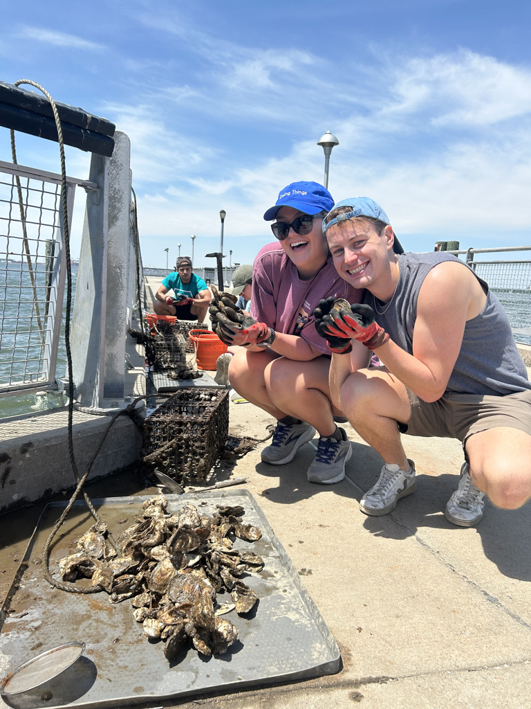

I am currently a Staff Associate at the Biomarkers Core Laboratory at the Columbia University Medical Center. Here, I work on exposomics projects to better understand the role of environmental exposures on human health. I specialize in Gas Chromatography-High Resolution Mass Spectrometry to measure environmental contaminants. In addition to my work at the Core, I am a part-time student in the M.S. Environmental Health Data Science at the Mailman School of Public Health.
Lan, Q., Vermeulen, R., Rahman, M., Dai, Y., Hu, W., Brooklynn McNeil, Lin, X., Batel Blechter, Dianzhi Ren Chaoyang, Duan, H., Wong, J., Niu, Y., Xu, J., Wei Fu Chaoyang, Kees Meliefste, Hosgood, D., Ye, M., Jia, X., Meng, T., & Bin, P. (2024). O-077 EXPOSOME CHARACTERIZATION OF DIESEL ENGINE EXHAUST EXPOSURE. Occupational Medicine, 74(Supplement_1). https://doi.org/10.1093/occmed/kqae023.0598
Lai, Y., Koelmel, J. P., Walker, D. I., Price, E. J., Papazian, S., Manz, K. E., Castilla-Fernández, D., Bowden, J. A., Nikiforov, V., David, A., Bessonneau, V., Amer, B., Suresh Seethapathy, Hu, X., Lin, E. Z., Akrem Jbebli, McNeil, B. R., Dinesh Barupal, Cerasa, M., & Xie, H. (2024). High-Resolution Mass Spectrometry for Human Exposomics: Expanding Chemical Space Coverage. Environmental Science & Technology. https://doi.org/10.1021/acs.est.4c01156
Rubbo, B., Li, Z., Phum Tachachartvanich, Baumert, B. O., Wang, H., Pan, S., Rock, S., Ryder, J. R., Jenkins, T., Sisley, S., Lin, X., Bartell, S., Inge, T. H., Stavra Xanthakos, McNeil, B., Robuck, A. R., La, M. A., Walker, D. I., Conti, D. V., & McConnell, R. (2024). Exposure to 4,4′‐DDE in visceral adipose tissue and weight loss in adolescents from the Teen‐LABS cohort. Obesity, 32(5), 1023–1032. https://doi.org/10.1002/oby.24009
Zhao, Y., Walker, D. I., Lill, C. M., Bloem, B. R., Sirwan K. L. Darweesh, Brismar Pinto-Pacheco, McNeil, B., Miller, G. W., Heath, A. K., Myrthe Frissen, Petrova, D., Maria-Jose Sánchez, María-Dolores Chirlaque, Guevara, M., Maurizio Zibetti, Panico, S., Middleton, L., Katzke, V., Kaaks, R., & Elio Riboli. (2023). Lipopolysaccharide-binding protein and future Parkinson’s disease risk: a European prospective cohort. Journal of Neuroinflammation, 20(1). https://doi.org/10.1186/s12974-023-02846-2
SETAC Nontarget Meeting / Untargetted Profiling of the Adipose Tissue Exposome; May 2022, Dhuram, North Carolina Presented a poster detailing the method development and performance of adipose tissue analysis for nontarget exposomics using GC-HRAM-MS.
EHEN Scientific Meeting
August 2022 - PRESENT, New York, NY
Specialize in GC-HRAM-MS for Exposomics as an analytical chemist at the Biomarkers Core Laboratory.
Update and optimize sample preparation for high throughput analysis using Opentron liquid handlers.
Conduct routine equipment maintenance, ensuring optimal functionality.
Develop pre-processing workflow for data analysis in collaboration with partners across the globe
Prepare QAQC reports for sample instrumental and data analysis
Utilize Thermoscientific Software and open-source tools for effective data processing.
Teach a session on data analysis tools at Exposome Bootcamp for the SHARP program 2023 and 2024.
Ichan School of Medicine - Mount Sinai / Associate Researcher I June 2021 - August 2022, New York, NY
Operated and maintained the GC-Orbitrap system to ensure accurate and reliable analytical performance.
Innovated and implemented novel sample preparation methods specifically designed for complex tissue types.
Developed automated methods on liquid handling robots, significantly increasing efficiency and enabling high throughput analysis.
Generated comprehensive QAQC reports utilizing quantitative methods, leveraging ThermoFisher software for data analysis and reporting.
July 2020 - May 2021, Athens, GA
Conducted respirometry testing for biodegradable packaging materials to assess their breakdown efficiency.
Utilized thermomechanical data collection techniques to investigate and analyze film properties and explain respirometry results.
Used Excel and TRIOS software for data analysis, and prepared detailed reports to summarize findings
June 2018 - May 2019, Athens, GA
Implemented aseptic techniques to uphold a sterile environment while working with infectious agents.
Conducted assays, including TCID50s and plaque assays, as part of drug repurposing initiatives.
Propagated cell lines to be used for experiments.
August 2016 - May 2020, Athens, GA
Recieved Presidential waiver and One UGA Diversity Scholarship. Minor in Global Health. Cum Laude Honors with GPA of 3.72. Attended UGA Cortona maymester in Italy with courses in Art history and Cancer Biology. Member of Pi Beta Phi Sorority, UGArden club as well as the Georgia Museum of Art Student Association.
August 2019 -December 2019, Singapore
Participated in an exchange semester in Singapore. Enrolled in the following courses: Immunology, Cell Biology, Biophysics as well as Japanese Literature.
July 2022, New York
Attended the 2-day bootcamp overviewing the methodologies for Exposomics studies. Participated in hands-on sessions using analytical techniques using R coding and other tools.
June 2023, Czech Republic
Traveled to a collaborator’s university to attend summer school program in Exposomics. Compared data techniques with those in the Czech Republic and learn about more tools for processing mass spectrometry data.